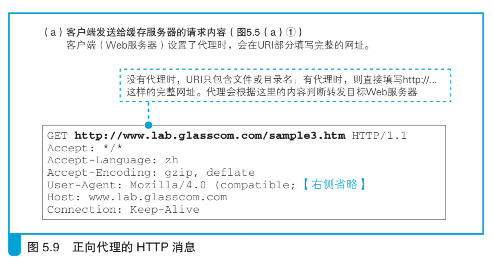

DNS 服务器 来分配
当访问服务器时，客户端需要先向 DNS 服务器查询服务器的 IP 地址，如果在 DNS 服务器中填写多个名称相同的记录，
则每次查询时 DNS 服务器都会按顺序返回不同的 IP 地址。例如，对于域名 www.lab. glasscom.com，
如果我们给它分配如下 3 个 IP 地址，192.0.2.60 192.0.2.70 192.0.2.80
当第 1 次查询这个域名时，服务器会返回如下内容。
192.0.2.60 192.0.2.70 192.0.2.80
当第 2 次查询时，服务器会返回如下内容。 192.0.2.70 192.0.2.80 192.0.2.60
当第 3 次查询时，服务器会返回如下内容。 192.0.2.80 192.0.2.60 192.0.2.70
当第 4 次查询时就又回到第 1 次查询的结果。这种方式称为 轮询(round-robin)，通过这种方式可以将访问平均分配给所有的服务器。
但这种方式是有缺点的。假如多台 Web 服务器中有一台出现了故障， 这时我们希望在返回 IP 地址时能够跳过故障的 Web 服务器，
然而普通的 DNS 服务器并不能确认 Web 服务器是否正常工作，因此即便 Web 服务器 宕机了，它依然可能会返回这台服务器的 IP 地址。
此外，轮询分配还可能会引发一些问题。在通过 CGI 等方式动态生成 网页的情况下，有些操作是要跨多个页面的，如果这期间访问的服务器发 生了变化，
这个操作就可能无法继续。例如在购物网站中，可能会在第一 个页面中输入地址和姓名，在第二个页面中输入信用卡号，这就属于刚才 说的那种情况。
1.如果要让用户访问最近的缓存服务器，则不应采用轮询方式，而是应 该判断客户端与缓存服务器的距离，并返回距离客户端最近的缓存服务器 IP 地址。
这里的关键点不言自明，那就是到底该怎样判断客户端与缓存服 务器之间的距离呢
首先，作为准备，需要事先从缓存服务器部署地点的路 由器收集路由信息。
例如有 4 台缓存服 务器，在这 4 台服务器的部署地点又分别有 4 台路由器，则我们需要分别 获取这 4 台路由器的路由表，并将 4 张路由表集中到 DNS 服务器上。
接下来，DNS 服务器根据路由表查询从本机到 DNS 查询消息的发送 方，也就是客户端 DNS 服务器的路由信息。
例如，根据路由器 A 的路由表，可以查出路由器 A 到客户端 DNS 服务器的路由。通过互联网 内部的路由表中的路由信息可以知道先通过运营商 X，
然后通过运营商 Y， 最后到达运营商 Z 这样的信息，通过这样的信息可以大致估算出距离。
依 次查询所有路由器的路由表之后，我们就可以通过比较找出哪一台路由器 距离客户端 DNS 服务器最近。
提供路由表的路由器位于缓存服务器的位 置，而客户端 DNS 服务器也应该和客户端在同一位置，这样就等于估算出 了缓存服务器与客户端之间的距离，
从而能够判断出哪台缓存服务器距离 客户端最近了。实际上，客户端 DNS 服务器不一定和客户端在同一位置， 因此可能无法得出准确的距离，但依然可以达到相当的精度。
2.还有另一个让客户端访问最近的缓存服务器的方法。HTTP 规格中定 义了很多头部字段，其中有一个叫作 Location 的字段。
当 Web 服务器数据 转移到其他服务器时可以使用这个字段，它的意思是“您要访问的数据在 另一台服务器上，请访问那台服务器吧。
”这种将客户端访问引导到另一台 Web 服务器的操作称为重定向，通过这种方法也可以将访问目标分配到最 近的缓存服务器。
当使用重定向告知客户端最近的缓存服务器时，首先需要将重定向服 务器注册到 Web 服务器端的 DNS 服务器上。
这样一来，客户端会将 HTTP 请求消息发送到重定向服务器上。重定向服务器和刚才一种方法中的 DNS 服务器一样，收集了来自各个路由器的路由信息，
并根据这些信息找到最近 的缓存服务器，然后将缓存服务器的地址放到 Location 字段中返回响应。
这种方法的缺点在于增加了 HTTP 消息的交互次数，相应的开销也比较 大，但它也有优点。
对 DNS 服务器进行扩展的方法是估算客户端 DNS 服务 器到缓存服务器之间的距离，因此精度较差;相对而言，重定向的方法是根据
客户端发送来的 HTTP 消息的发送方 IP 地址来估算距离的，因此精度较高。
使用负载均衡器分配访问
为了避免出现前面的问题，可以使用一种叫作负载均衡器的设备。使 用负载均衡器时，
首先要用负载均衡器的 IP 地址代替 Web 服务器的实际 地址注册到 DNS 服务器上。
假设有一个域名 www.lab.glasscom.com，我们 将这个域名对应的 IP 地址设置为负载均衡器的 IP 地址并注册到 DNS 服务 器上。
于是，客户端会认为负载均衡器就是一台 Web 服务器，并向其发送请求，然后由负载均衡器来判断将请求转发给哪台 Web 服务器 。
这里的关键点不言而喻，那就是如何判断将请求转发给哪台 Web 服务器。
判断条件有很多种，根据操作是否跨多个页面，判断条件也会有所不 同。如果操作没有跨多个页面，则可以根据 Web 服务器的负载状况来进行 判断。
负载均衡器可以定期采集 Web 服务器的 CPU、内存使用率，并根据 这些数据判断服务器的负载状况，也可以向 Web 服务器发送测试包，
根据 响应所需的时间来判断负载状况。当然，Web 服务器的负载可能会在短时 间内上下波动，因此无法非常准确地把握负载状况，
反过来说，如果过于密集地去查询服务器的负载，这个查询操作本身就会增加 Web 服务器的负 载。
因此也有一种方案是不去查询服务器的负载，而是根据事先设置的服 务器性能指数，按比例来分配请求。
无论如何，这些方法都能够避免负载 集中在某一台服务器上。
当操作跨多个页面时，则不考虑 Web 服务器的负载，而是必须将请求 发送到同一台 Web 服务器上。
要实现这一点，关键在于我们必须要判断一 个操作是否跨了多个页面。HTTP 的基本工作方式是在发送请求消息之前 先建立 TCP 连接，
当服务器发送响应消息后断开连接，下次访问 Web 服 务器的时候，再重新建立 TCP 连接 。
因此，在 Web 服务器看来，每一次 HTTP 访问都是相互独立的，无法判断是否和之前的请求相关。
使用缓存服务器分担负载
缓存服务器是一台通过代理机制对数据进行缓存的服务器。代理介于 Web 服务器和客户端之间，具有对 Web 服务器访问进行中转的功能。
当进 行中转时，它可以将 Web 服务器返回的数据保存在磁盘中，并可以代替 Web 服务器将磁盘中的数据返回给客户端。
这种保存的数据称为缓存，缓 存服务器指的也就是这样的功能。
Web 服务器需要执行检查网址和访问权限，以及在页面上填充数据等 内部操作过程，因此将页面数据返回客户端所需的时间较长。
相对地，缓 存服务器只要将保存在磁盘上的数据读取出来发送给客户端就可以了，因 此可以比 Web 服务器更快地返回数据。
缓存服务器和负载均衡器一 样，需要代替 Web 服务器被注册到 DNS 服务器中。
假设不存在缓 存数据。这时，缓存服务器会在 HTTP 头部字段中添 加一个 Via 字段，表示这个消息经过缓存服务器转发，
然后将消息转发给 Web 服务器在这个过程中，我们需要判断应该将请求消息转发给哪台 Web 服务 器。
如果只有一台 Web 服务器，那么情况比较简单，只要将 Web 服务器 的域名和 IP 地址配置在缓存服务器上，让它无条件转发给这台服务器就可 以了。
不过，如果一台缓存服务器对应多台 Web 服务器就没那么简单了， 需要根据请求消息的内容来判断应该转发给哪台 Web 服务器上。
要实现这个目 的有几种方法，其中比较有代表性的是根据请求消息的 URI中的目录名来进行判断。
使用这种方法时，我们首先需要在缓存服务器上 进行如下设置。
• 当 URI 为 /dir1/ 这个目录时，转发给 www1.lab.glasscom.com
• 当 URI 为 /dir2/ 这个目录时，转发给 www2.lab.glasscom.com
正向代理
Web 服务器一端部署一个代理，然后利用其缓存功能来 改善服务器的性能，还有一种方法是在客户端一侧部署缓存服务器
缓存服务器使用的代理机制最早就是放在客户端一侧的，这 才是代理的原型，称为正向代理
正向代理刚刚出现的时候，其目的之一就是缓存，这个目的和服务器 端的缓存服务器相同。不过，当时的正向代理还有另外一个目的，那就是 用来实现防火墙。
代理的原理如图 5.8 所示，它会先接 收来自客户端的请求消息，然后再转发到互联网中 B，这样就可以实现只允 许通过必要的网络包了。
这时，如果能够利用代理的缓存，那么效果就会 更好，因为对于以前访问过的数据，可以直接从位于公司内网的代理服务 器获得，
这比通过低速线路访问互联网要快很多；
由于代理在转发过程中可以查看请求的内容，所以可以根据内 容判断是否允许访问。也就是说，通过代理可以禁止员工访问危险的网站，
或者是与工作内容无关的网站。包过滤方式的防火墙只能根据 IP 地址和端 口号进行判断，因此无法实现这一目的。
在使用正向代理时，一般需要在浏览器的设置窗口中的“代理服务器” 一栏中填写正向代理的 IP 地址，
浏览器发送请求消息的过程也会发生相应 的变化。在没有设置正向代理的情况下，浏览器会根据网址栏中输入的 http://... 字符串判断 Web 服务器的域名，
并向其发送请求消息;当设置了 正向代理时，浏览器会忽略网址栏的内容，直接将所有请求发送给正向代 理。请求消息的内容也会有一些不同。
没有正向代理时，浏览器会从网址 中提取出 Web 服务器域名后面的文件名或目录名，然后将其作为请求的 URI 进行发送;而有正向代理时，
在请求的 URI 字段中填写完整的 http://... 网址。
正向代理转发消息的过程也和服务器端的缓存服务器有一些不同，不同点在于对转发目标 Web 服务器的判断上。
使用正向代理时，URI 部分为 http://... 这样的完整网址，因此可以根据这个网址来转发，不需要像服务器 端的缓存服务器一样实现设置好转发目标 Web 服务器，
而且可以发给任意 Web 服务器。而服务器端的缓存服务器只能向事先设置好的目标进行转 发，这就是两者不同的地方。

反向代理
通过将请求消息中的 URI 中的目录名 与 Web 服务器进行关联，使得代理能够转发一般的不包含完整网址的请求 消息。
我们前面介绍的服务器端的缓存服务器采用的正是这种方式，这种方式称为反向代理(reverse proxy)。
透明代理
缓存服务器判断转发目标的方法还有一种，那就是查看请求消息的包头 部。因为包的 IP 头部中包含接收方 IP 地址，只要知道了这个地址，
就知道 用户要访问哪台服务器了 A。这种方法称为透明代理(transparent proxy)。
这种方法也可以转发一般的请求消息，因此不需要像正向代理一样设 置浏览器参数，也不需要在缓存服务器上设置转发目标，
可以将请求转发 给任意 Web 服务器。
透明代理集合了正向代理和反向代理的优点，是一个非常方便的方式， 但也需要注意一点，那就是如何才能让请求消息到达透明代理。
由于透明 代理不需要设置在浏览器中，那么浏览器还是照常向 Web 服务器发送请求 消息。反向代理采用的是通过 DNS 服务器解析引导的方法，
但透明代理是 不能采用这种方法的，否则透明代理本身就变成了访问目标，也就无法通 过接收方 IP 地址判断转发目标了，这就失去了透明代理的意义。
总之，正 常情况下，请求消息是从浏览器直接发送到 Web 服务器，并不会到达透明 代理。
于是，我们必须将透明代理放在请求消息从浏览器传输到 Web 服务器 的路径中，当消息经过时进行拦截。可能大家觉得这种方法太粗暴，
但只 有这样才能让消息到达透明代理，然后再转发给 Web 服务器。如果请求消 息有多条路径可以到达 Web 服务器，
那么就必须在这些路径上都放置透明 代理，因此一般是将网络设计成只有一条路可以走的结构，然后在这一条 路径上放置透明代理。
连接互联网的接入网就是这样一个关口，因此可以 在接入网的入口处放置反向代理。
利用内容分发服务分担负载
在使用内容分发服务时，互联网中有很多缓存服务 器，如何才能从这些服务器中找到离客户端最近的一个，并让客户端去访 问那台服务器呢?
第一个方法是像负载均 衡一样用 DNS 服务器来分配访问。也就是说，我们可以在 DNS 服务器返 回 Web 服务器 IP 地址时，
对返回的内容进行一些加工，使其能够返回距 离客户端最近的缓存服务器的 IP 地址。